Shari
Shari · Hokkaido
Shari
Highlighted on the Hokkaido map.
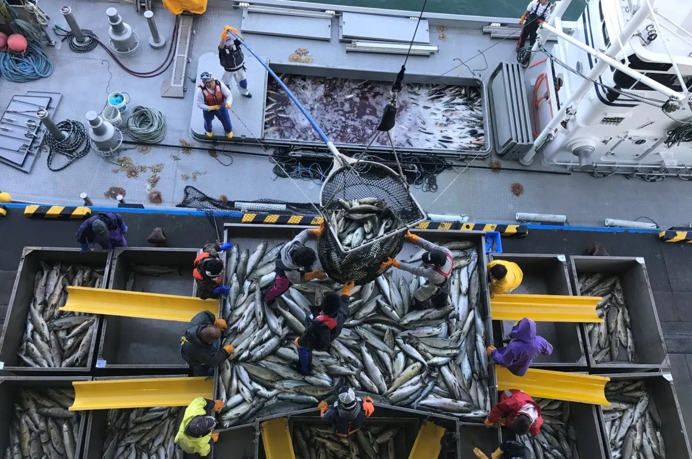
Stay
知床天然温泉 ルートイングランティア知床 -斜里駅前-
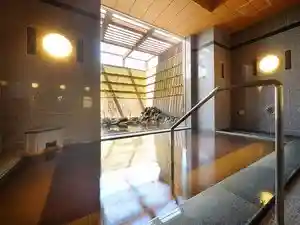
Shiretoko Tennen Onsen Ruutoinguranteia Shiretoko - Sharieki Mae
ＨＯＴＥＬ ＢＯＴＨ
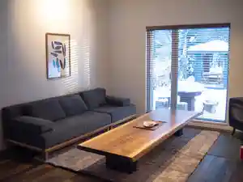
H O T E L B O T H
斜里温泉 湯元館
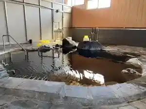
Shari Onsen Yumoto Kan
Hermit 知床
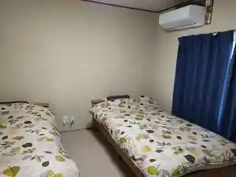
Hermit Shiretoko
知床ごんた村
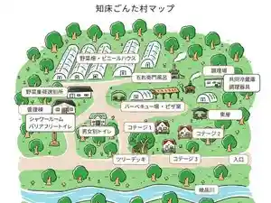
Shiretoko Gonta Mura
来運水の学校
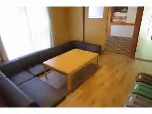
Rai Unsui No Gakkou
知床VILLA HOTEL FREEZE
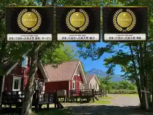
Shiretoko Villa Hotel Freeze
雪霞 SHIRETOKO
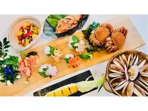
Yuki Kasumi Shiretoko
知床の宿 民宿いしやま
Shiretoko No Yado Minshuku Ishiyama
Lantern SHIRETOKO/ランタン知床
Lantern Shiretoko/ Rantan Shiretoko
お宿 来羅玖
O Yado Rai Ra Ku
レンブラントリゾート知床
Renburantorizooto Shiretoko
Dining
知床ごんた村
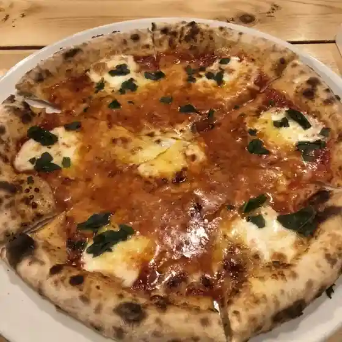
Shiretoko Gonta Mura
木下小屋
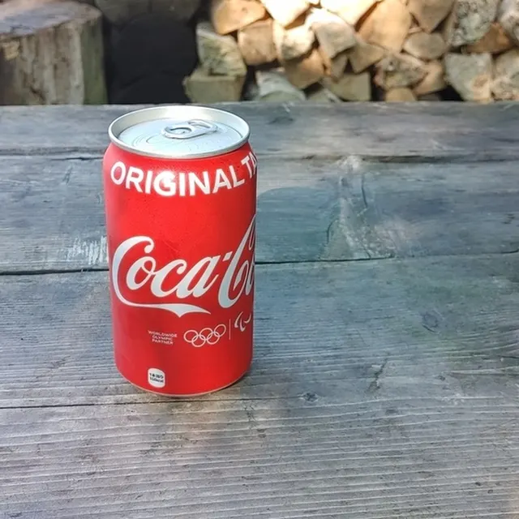
Kinoshita Koya
ビストロ カンパネラ
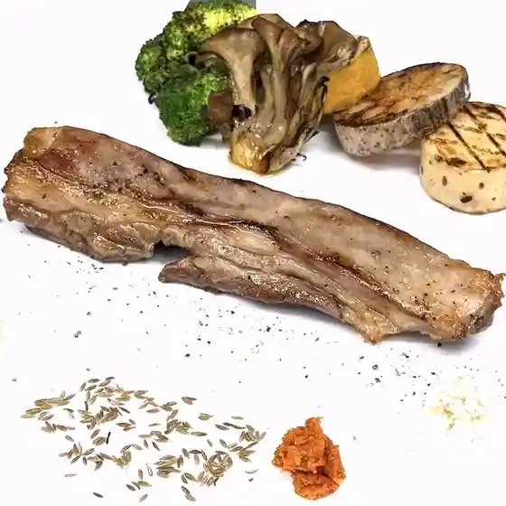
Bisutoro Kanpanera
知床ヴィラホテルフリーズ
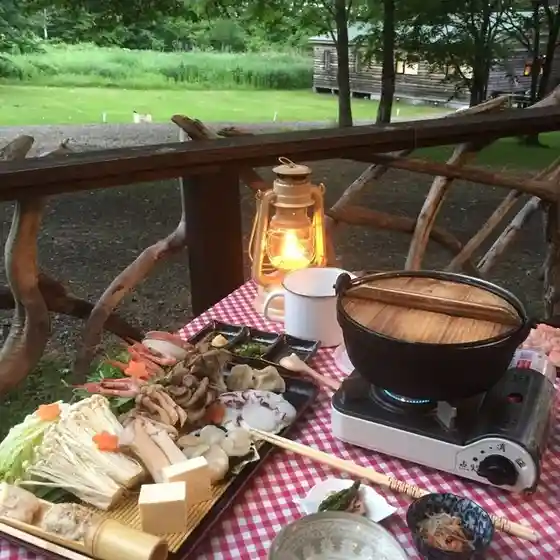
Shiretoko Virahoterufuriizu
ピリカデリック
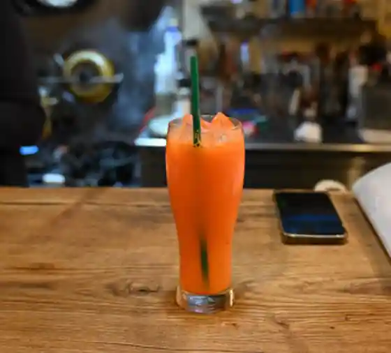
Pirikaderikku
コーヒー アルビレオ
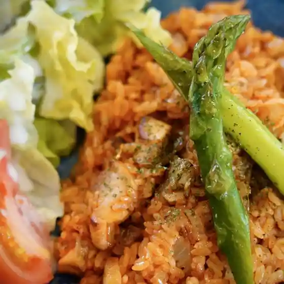
Koohii Arubireo
ホテル季風クラブ知床
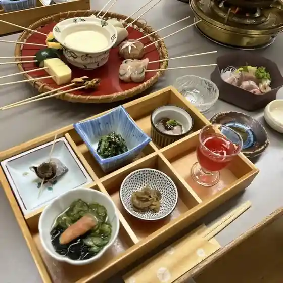
Hoteru Ki Kaze Kurabu Shiretoko
てんてんてまり
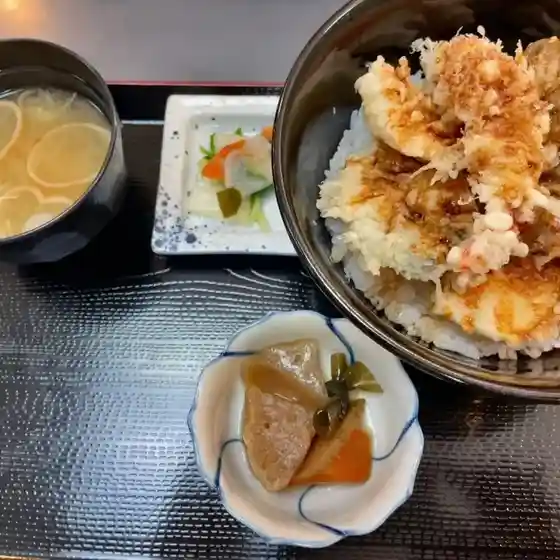
Tententemari
居酒屋のんこ
Izakaya Nonko
知床ごんた村 豊倉店
Shiretoko Gonta Mura Toyokura Mise
しれとこ 来々軒
Shiretoko Rairai Ken
エーコープ しゃり店
Eekoopu Shari Mise
三代目 千葉商店
Sandaime Chiba Shouten
旅の駅
Tabi No Eki
居酒屋 いた吉
Izakaya Ita Kichi
ガーデンハウス藤苑
Gaadenhausu Fuji En
KIKI知床 ナチュラルリゾート
Kiki Shiretoko Nachurarurizooto
知床 串丸
Shiretoko Kushi Maru
オシンコシン館
Oshinkoshin Kan
ごっこや
Gokkoya
ごはん屋 い志もと
Gohan Ya I Kokorozashi Moto
COBAKO
Cobako
Lantern SHIRETOKO
Lantern Shiretoko
肉のたかはし
Niku Notakahashi
Sights
Utoro Sake Terasu
Utoro Sake Terasu